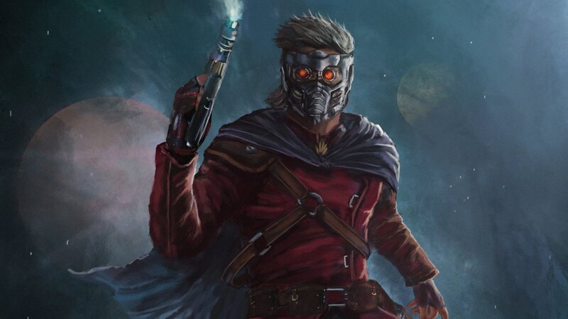
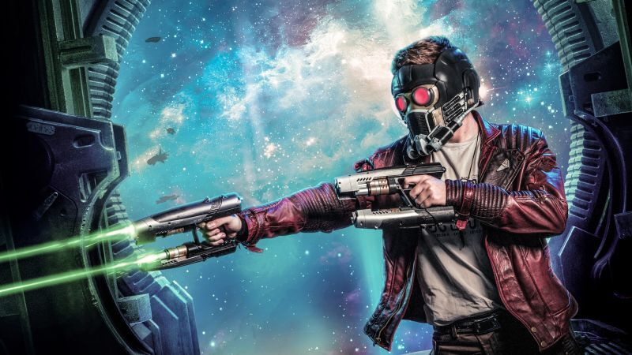

Descubre toda la historia del personaje Star Lord en esta pagina web, navegando por el apartado de categorias puede indigar en cada un de las fantasticas aventureas y historias que ha protagonizado el polici intergalactivo mas famoso.
No sin antes darle al play a la canción favorita de Star Lord:
Star-Lord es un superhéroe ficticio que aparece en los cómics estadounidenses publicados por Marvel Comics. El personaje, creado por Steve Englehart y Steve Gan, apareció por primera vez en Marvel Preview #4 (enero de 1976). Es hijo de la humana Meredith Quill y del Spartoi J'son, y como adulto Peter Quill asume el manto de Star-Lord, un policía interplanetario.


El personaje desempeñó papeles prominentes en las historias de cómic "Aniquilación" (2006) y "Aniquilación: Conquista", "Guerra de los Reyes" y The Thanos Imperative. Se convirtió en el líder del equipo de superhéroes, Guardianes de la Galaxia en el relanzamiento del equipo en 2008. Ha aparecido en una variedad de productos asociados con Marvel, incluidas series de televisión animadas, juguetes y tarjetas de intercambio.